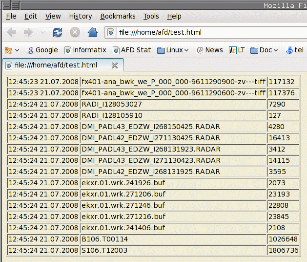

Holger.Kiehl@dwd.de
Last updated: 09.04.2024
![[red dot]](../images/reddot.gif) IndexHome
IndexHomeHere follow some examples on how one can use Alda.
| Description | Command | Example Output |
|---|---|---|
| Show all file names from input log | alda -f -L I -o "%IF" |
fx401-ana_bwk_we_P_000_000-9611290900-zv---tiff
fx401-ana_bwk_we_P_000_000-9611290600-zv---tiff
RADI_I128053027
RADI_I128105910
DMI_PADL43_EDZW_I268150425.RADAR
DMI_PADL42_EDZW_I271130425.RADAR
DMI_PADL43_EDZW_I268131923.RADAR
DMI_PADL43_EDZW_I271130423.RADAR
DMI_PADL42_EDZW_I268131925.RADAR
ekxr.01.wrk.241926.buf
ekxr.01.wrk.271206.buf
ekxr.01.wrk.271246.buf
ekxr.01.wrk.271216.buf
ekxr.01.wrk.241406.buf
B106.T00114
S106.T12003 |
| Show all file names from input log starting with the name DMI | alda -f -L I -o "%IF" DMI\* |
DMI_PADL43_EDZW_I268150425.RADAR
DMI_PADL42_EDZW_I271130425.RADAR
DMI_PADL43_EDZW_I268131923.RADAR
DMI_PADL43_EDZW_I271130423.RADAR
DMI_PADL42_EDZW_I268131925.RADAR |
| Show all file names from input log and the size in bytes describing each element in more details. | alda -f -L I -o "Filename: %IF Size: %ISB" |
Filename: fx401-ana_bwk_we_P_000_000-9611290900-zv---tiff Size: 117132
Filename: fx401-ana_bwk_we_P_000_000-9611290600-zv---tiff Size: 117376
Filename: RADI_I128053027 Size: 7290
Filename: RADI_I128105910 Size: 127
Filename: DMI_PADL43_EDZW_I268150425.RADAR Size: 4280
Filename: DMI_PADL42_EDZW_I271130425.RADAR Size: 16413
Filename: DMI_PADL43_EDZW_I268131923.RADAR Size: 3412
Filename: DMI_PADL43_EDZW_I271130423.RADAR Size: 14115
Filename: DMI_PADL42_EDZW_I268131925.RADAR Size: 3595
Filename: ekxr.01.wrk.241926.buf Size: 2073
Filename: ekxr.01.wrk.271206.buf Size: 23193
Filename: ekxr.01.wrk.271246.buf Size: 22808
Filename: ekxr.01.wrk.271216.buf Size: 23845
Filename: ekxr.01.wrk.241406.buf Size: 2108
Filename: B106.T00114 Size: 1026648
Filename: S106.T12003 Size: 1806736 |
| Description | Command | Example Output |
|---|---|---|
| Show all file names from input log and the size in bytes separated by a pipe (|) sign. | alda -f -L I -o "%IF|%ISB" |
fx401-ana_bwk_we_P_000_000-9611290900-zv---tiff|117132
fx401-ana_bwk_we_P_000_000-9611290600-zv---tiff|117376
RADI_I128053027|7290
RADI_I128105910|127
DMI_PADL43_EDZW_I268150425.RADAR|4280
DMI_PADL42_EDZW_I271130425.RADAR|16413
DMI_PADL43_EDZW_I268131923.RADAR|3412
DMI_PADL43_EDZW_I271130423.RADAR|14115
DMI_PADL42_EDZW_I268131925.RADAR|3595
ekxr.01.wrk.241926.buf|2073
ekxr.01.wrk.271206.buf|23193
ekxr.01.wrk.271246.buf|22808
ekxr.01.wrk.271216.buf|23845
ekxr.01.wrk.241406.buf|2108
B106.T00114|1026648
S106.T12003|1806736 |
| Show all file names from input log and the size in kilobytes and whole numbers separated by a pipe (|) sign. | alda -f -L I -o "%IF|%ISK" |
fx401-ana_bwk_we_P_000_000-9611290900-zv---tiff|114
fx401-ana_bwk_we_P_000_000-9611290600-zv---tiff|114
RADI_I128053027|7
RADI_I128105910|0
DMI_PADL43_EDZW_I268150425.RADAR|4
DMI_PADL42_EDZW_I271130425.RADAR|16
DMI_PADL43_EDZW_I268131923.RADAR|3
DMI_PADL43_EDZW_I271130423.RADAR|13
DMI_PADL42_EDZW_I268131925.RADAR|3
ekxr.01.wrk.241926.buf|2
ekxr.01.wrk.271206.buf|22
ekxr.01.wrk.271246.buf|22
ekxr.01.wrk.271216.buf|23
ekxr.01.wrk.241406.buf|2
B106.T00114|1002
S106.T12003|1764 |
| Show all file names from input log and the size in kilobytes and fractional numbers with two digits behind the decimal dot separated by a pipe (|) sign. | alda -f -L I -o "%IF|%.2dISK" |
fx401-ana_bwk_we_P_000_000-9611290900-zv---tiff|114.39
fx401-ana_bwk_we_P_000_000-9611290600-zv---tiff|114.62
RADI_I128053027|7.12
RADI_I128105910|0.12
DMI_PADL43_EDZW_I268150425.RADAR|4.18
DMI_PADL42_EDZW_I271130425.RADAR|16.03
DMI_PADL43_EDZW_I268131923.RADAR|3.33
DMI_PADL43_EDZW_I271130423.RADAR|13.78
DMI_PADL42_EDZW_I268131925.RADAR|3.51
ekxr.01.wrk.241926.buf|2.02
ekxr.01.wrk.271206.buf|22.65
ekxr.01.wrk.271246.buf|22.27
ekxr.01.wrk.271216.buf|23.29
ekxr.01.wrk.241406.buf|2.06
B106.T00114|1002.59
S106.T12003|1764.39 |
| Show all file names from input log and the size in best human readable form in fractional numbers with two digits behind the decimal dot separated by a pipe (|) sign. | alda -f -L I -o "%IF|%.2dISA" |
fx401-ana_bwk_we_P_000_000-9611290900-zv---tiff|114.39 KiB
fx401-ana_bwk_we_P_000_000-9611290600-zv---tiff|114.62 KiB
RADI_I128053027|7.12 KiB
RADI_I128105910|127.00 B
DMI_PADL43_EDZW_I268150425.RADAR|4.18 KiB
DMI_PADL42_EDZW_I271130425.RADAR|16.03 KiB
DMI_PADL43_EDZW_I268131923.RADAR|3.33 KiB
DMI_PADL43_EDZW_I271130423.RADAR|13.78 KiB
DMI_PADL42_EDZW_I268131925.RADAR|3.51 KiB
ekxr.01.wrk.241926.buf|2.02 KiB
ekxr.01.wrk.271206.buf|22.65 KiB
ekxr.01.wrk.271246.buf|22.27 KiB
ekxr.01.wrk.271216.buf|23.29 KiB
ekxr.01.wrk.241406.buf|2.06 KiB
B106.T00114|1002.59 KiB
S106.T12003|1.72 MiB |
| Description | Command | Example Output |
|---|---|---|
| Show all file names from input log, the date expressed in unix time in decimal numbers and the size in bytes separated by a pipe (|) sign. | alda -f -L I -o "%ITu|%IF|%ISB" |
1216637123|fx401-ana_bwk_we_P_000_000-9611290900-zv---tiff|117132
1216637123|fx401-ana_bwk_we_P_000_000-9611290600-zv---tiff|117376
1216637124|RADI_I128053027|7290
1216637124|RADI_I128105910|127
1216637124|DMI_PADL43_EDZW_I268150425.RADAR|4280
1216637124|DMI_PADL42_EDZW_I271130425.RADAR|16413
1216637124|DMI_PADL43_EDZW_I268131923.RADAR|3412
1216637124|DMI_PADL43_EDZW_I271130423.RADAR|14115
1216637124|DMI_PADL42_EDZW_I268131925.RADAR|3595
1216637124|ekxr.01.wrk.241926.buf|2073
1216637124|ekxr.01.wrk.271206.buf|23193
1216637124|ekxr.01.wrk.271246.buf|22808
1216637124|ekxr.01.wrk.271216.buf|23845
1216637124|ekxr.01.wrk.241406.buf|2108
1216637124|B106.T00114|1026648
1216637124|S106.T12003|1806736 |
| Show all file names from input log, the date expressed in unix time hexadecimal numbers and the size in bytes separated by a pipe (|) sign. | alda -f -L I -o "%xITu|%IF|%ISB" |
488468c3|fx401-ana_bwk_we_P_000_000-9611290900-zv---tiff|117132
488468c3|fx401-ana_bwk_we_P_000_000-9611290600-zv---tiff|117376
488468c4|RADI_I128053027|7290
488468c4|RADI_I128105910|127
488468c4|DMI_PADL43_EDZW_I268150425.RADAR|4280
488468c4|DMI_PADL42_EDZW_I271130425.RADAR|16413
488468c4|DMI_PADL43_EDZW_I268131923.RADAR|3412
488468c4|DMI_PADL43_EDZW_I271130423.RADAR|14115
488468c4|DMI_PADL42_EDZW_I268131925.RADAR|3595
488468c4|ekxr.01.wrk.241926.buf|2073
488468c4|ekxr.01.wrk.271206.buf|23193
488468c4|ekxr.01.wrk.271246.buf|22808
488468c4|ekxr.01.wrk.271216.buf|23845
488468c4|ekxr.01.wrk.241406.buf|2108
488468c4|B106.T00114|1026648
488468c4|S106.T12003|1806736 |
| Show all file names from input log, the date expressed in a human readable form (HH:MM:SS DD.MM.YYYY) and the size in bytes separated by a pipe (|) sign. | alda -f -L I -o "%ITX %ITd.%ITm.%ITY|%IF|%ISB" |
12:45:23 21.07.2008|fx401-ana_bwk_we_P_000_000-9611290900-zv---tiff|117132
12:45:23 21.07.2008|fx401-ana_bwk_we_P_000_000-9611290600-zv---tiff|117376
12:45:24 21.07.2008|RADI_I128053027|7290
12:45:24 21.07.2008|RADI_I128105910|127
12:45:24 21.07.2008|DMI_PADL43_EDZW_I268150425.RADAR|4280
12:45:24 21.07.2008|DMI_PADL42_EDZW_I271130425.RADAR|16413
12:45:24 21.07.2008|DMI_PADL43_EDZW_I268131923.RADAR|3412
12:45:24 21.07.2008|DMI_PADL43_EDZW_I271130423.RADAR|14115
12:45:24 21.07.2008|DMI_PADL42_EDZW_I268131925.RADAR|3595
12:45:24 21.07.2008|ekxr.01.wrk.241926.buf|2073
12:45:24 21.07.2008|ekxr.01.wrk.271206.buf|23193
12:45:24 21.07.2008|ekxr.01.wrk.271246.buf|22808
12:45:24 21.07.2008|ekxr.01.wrk.271216.buf|23845
12:45:24 21.07.2008|ekxr.01.wrk.241406.buf|2108
12:45:24 21.07.2008|B106.T00114|1026648
12:45:24 21.07.2008|S106.T12003|1806736 |
| Description | Command | Example Output |
|---|---|---|
| Cut of the first part of a remote output file name/directory. If the complete path is /home/donald/xfs/TOPF/A_IS..., /home/donald/xfs/HLYD/A_IEVX... or /home/donald/cache/data/sf-pklo/WIGO... and you would like to cut away /home/donald. With the following command syntax you can just show part of string. | alda -f -h ducktown -L O -o "%OTd %OTH:%OTM:%OTS %OSB %[13-$]OF" |
04 17:07:35 201 /xfs/TOPF/A_ISSE01LFPW041700RRA_C_EDZW_20240404170705_80705845
04 17:07:35 42605 /xfs/HLYD/A_IEVX61EUMP041616_C_EDZW_20240404170701_80705767
04 17:07:35 126938 /xfs/HLYD/A_IELX11EUMS041519_C_EDZW_20240404170653_80705423
04 17:07:42 250 /files/data/sf-pklo/WIGOS_0-20000-0-02609_2024-04-04T170000.bufr |
With the help of the header option (-H) and the footer option it is also possible to let alda generate HTML logs.
| Alda command | alda -f -L I -H header.file -F footer.file -o "<tr><td>%ITX %ITd.%ITm.%ITY</td><td>%IF</td><td>%ISB</td></tr>" |
| Content of header file (header.file) |
<!DOCTYPE HTML PUBLIC "-//W3C//DTD HTML 4.01 Transitional//EN">
<html>
<body bgcolor="#F0ECD6">
<table border> |
| Content of footer file (footer.file) |
</table>
</body>
</html> |
| Resulting HTML Output |
<!DOCTYPE HTML PUBLIC "-//W3C//DTD HTML 4.01 Transitional//EN">
<html>
<body bgcolor="#F0ECD6">
<table border>
<tr><td>12:45:23 21.07.2008</td><td>fx401-ana_bwk_we_P_000_000-9611290900-zv---tiff</td><td>117132</td></tr>
<tr><td>12:45:23 21.07.2008</td><td>fx401-ana_bwk_we_P_000_000-9611290600-zv---tiff</td><td>117376</td></tr>
<tr><td>12:45:24 21.07.2008</td><td>RADI_I128053027</td><td>7290</td></tr>
<tr><td>12:45:24 21.07.2008</td><td>RADI_I128105910</td><td>127</td></tr>
<tr><td>12:45:24 21.07.2008</td><td>DMI_PADL43_EDZW_I268150425.RADAR</td><td>4280</td></tr>
<tr><td>12:45:24 21.07.2008</td><td>DMI_PADL42_EDZW_I271130425.RADAR</td><td>16413</td></tr>
<tr><td>12:45:24 21.07.2008</td><td>DMI_PADL43_EDZW_I268131923.RADAR</td><td>3412</td></tr>
<tr><td>12:45:24 21.07.2008</td><td>DMI_PADL43_EDZW_I271130423.RADAR</td><td>14115</td></tr>
<tr><td>12:45:24 21.07.2008</td><td>DMI_PADL42_EDZW_I268131925.RADAR</td><td>3595</td></tr>
<tr><td>12:45:24 21.07.2008</td><td>ekxr.01.wrk.241926.buf</td><td>2073</td></tr>
<tr><td>12:45:24 21.07.2008</td><td>ekxr.01.wrk.271206.buf</td><td>23193</td></tr>
<tr><td>12:45:24 21.07.2008</td><td>ekxr.01.wrk.271246.buf</td><td>22808</td></tr>
<tr><td>12:45:24 21.07.2008</td><td>ekxr.01.wrk.271216.buf</td><td>23845</td></tr>
<tr><td>12:45:24 21.07.2008</td><td>ekxr.01.wrk.241406.buf</td><td>2108</td></tr>
<tr><td>12:45:24 21.07.2008</td><td>B106.T00114</td><td>1026648</td></tr>
<tr><td>12:45:24 21.07.2008</td><td>S106.T12003</td><td>1806736</td></tr>
</table>
</html>
</body> |
| What it looks like in a browser. |  |
|
Copyright © 2010 - 2024 by H.Kiehl Holger.Kiehl@dwd.de Last updated: 09.04.2024 |
Index |
Home |